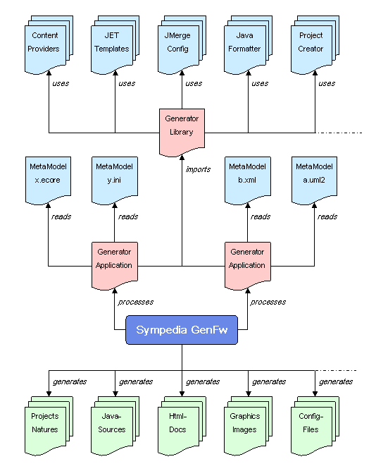

Sympedia GenFwSympedia GenFw is a flexible and easy to use framework for software artifact generation. Input models can be associated with generators via extensible rule sets. Additional Content providers, generators and rules can be provided by Eclipse plugins. This homepage could still be a bit nicer, but the software is ready to be installed and here is some technical documentation: Tutorial 1 Tutorial 2 GenFw is hosted at BerliOS. |
 |